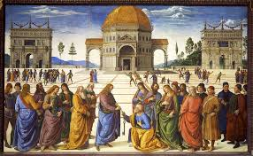

The renaissance would come to an end as a result of several different things that occured. Multiple different wars would take place in Italy during this time. Spanish and French invaders would battle for italian territories and would cause a disruption in the region. Trading routes would begin changing during this time also leading to economic decline and would limit the amount of money that contributers could spend on art.
A movement known as the counter reformation would emerge. During this time members of chatholic chuches would begin to censor the artist and writters. The would do this to protest against them and in response to the protestant reformation. This would lead to many artist being scared to do what they always do and be bold. This would cause them to have a more stiff creativity. In 1545 the roman inquisition would be created by the council of trent. This would make humanism or any other views that would challenge catholic churches an act of heresy that can be punishable by death.

Even though the exact timing of the impact of the ranaissance is debated there it little disbpute over if the events of the period that would led to advances that would change the way people would understand the world around them. Many have sadi that the renaissance was a unique time in European history while others sa that it was the same as the middle ages. Modern historians believe that the middle ages had its own cultural identity that is being overlooked by the renaissance.
